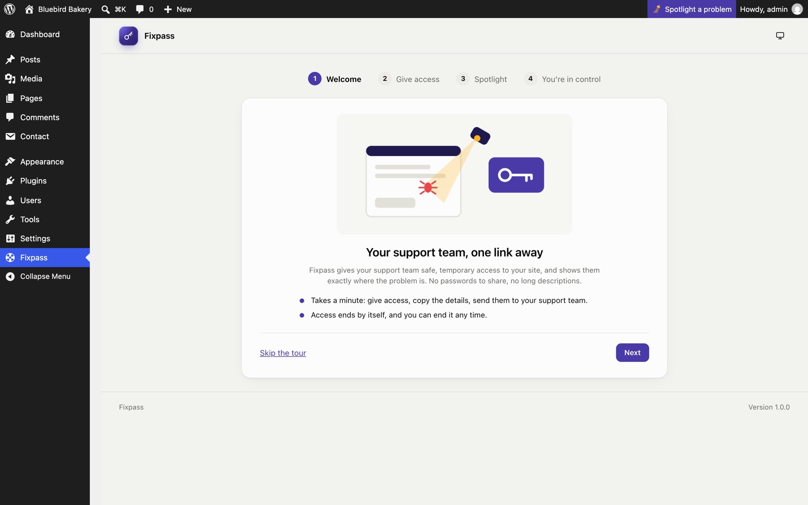
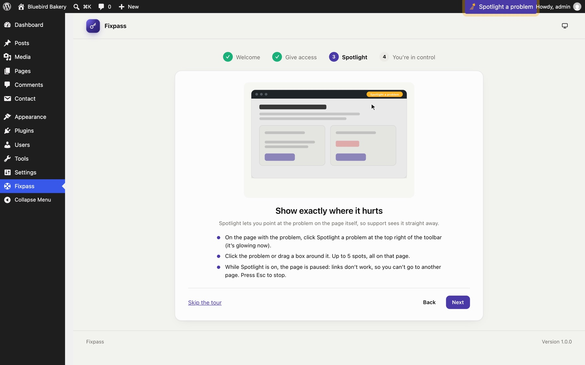
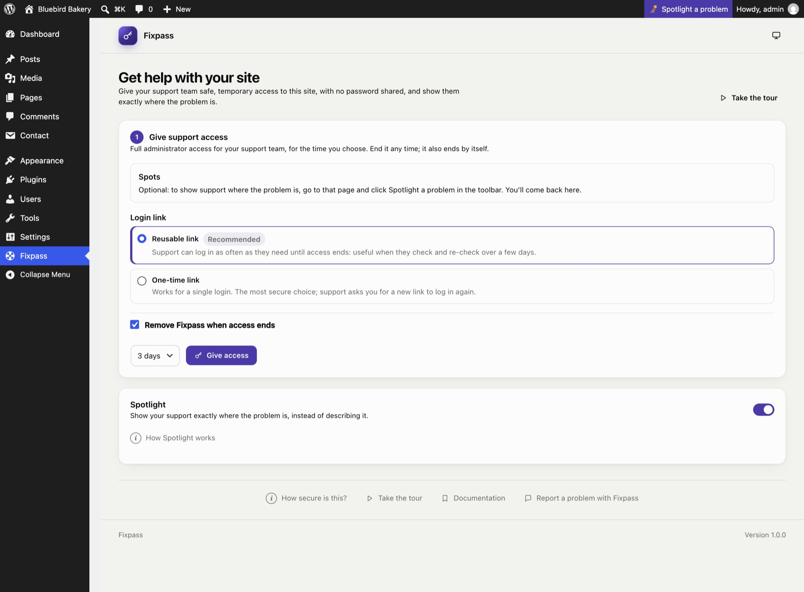

Getting started
Install#
- Download
fixpass.zipfrom the latest release. - In WordPress, go to Plugins → Add New → Upload Plugin, choose the zip and click Install Now, then Activate.
Fixpass needs WordPress 6.5 or later and PHP 7.4 or later. Only administrators can use it.
The tour#
After activation you land on the Fixpass page with a four-step tour:
- Welcome: what Fixpass does.
- Give access: the two steps to get support in.
- Spotlight: pointing at a problem. The Spotlight a problem button in the toolbar glows while you're on this step, so you know where it is.
- You're in control: the status, extending and ending access.


On the last step, Don't show this again (ticked by default) hides the tour until Fixpass is reinstalled. Skip the tour hides it for this visit only. You can open it again any time with Take the tour, at the top and bottom of the Fixpass page.
Your first support request#
- Show the problem (optional). Go to the page where something is wrong and click Spotlight a problem in the toolbar. Click the broken part, or drag a box around it, add a note, then click Continue. See Spotlight.
- Give access. On the Fixpass page, choose a length (3 days by default) and click Give access. See Giving support access.
- Copy the details. Click Copy details and paste them into a reply to your support team: an email, a ticket or a chat.
- Watch the status. The page shows when support logs in, logs out or finishes, and updates by itself.
When support is done, or when access runs out, the support account is deleted. If you left Remove Fixpass when access ends ticked, Fixpass then removes itself too.
Where things are#

- Fixpass in the admin menu: everything for the site owner.
- Spotlight a problem in the toolbar: on every page of the site and the dashboard, for administrators, while Spotlight is on and no support access is open.
Still stuck? Check the FAQ, or ask on GitHub.